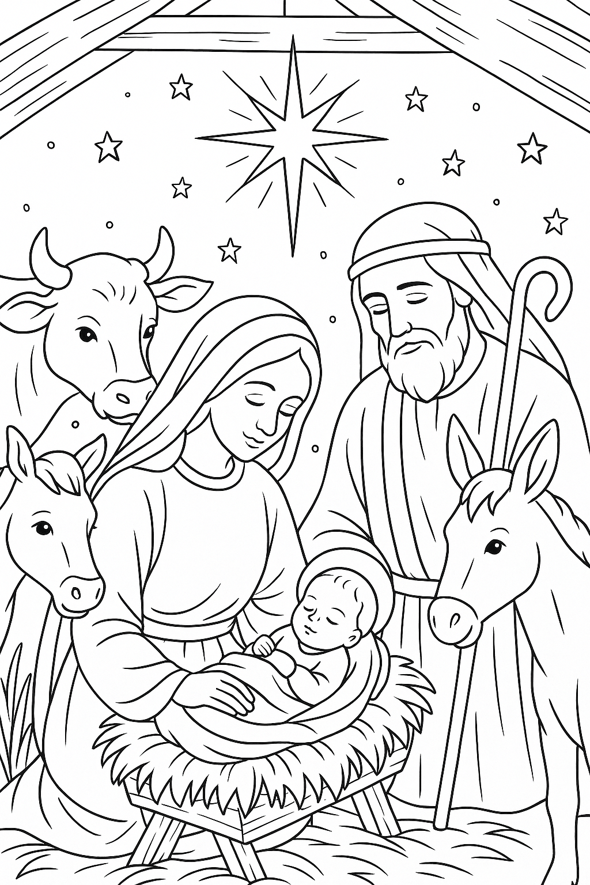
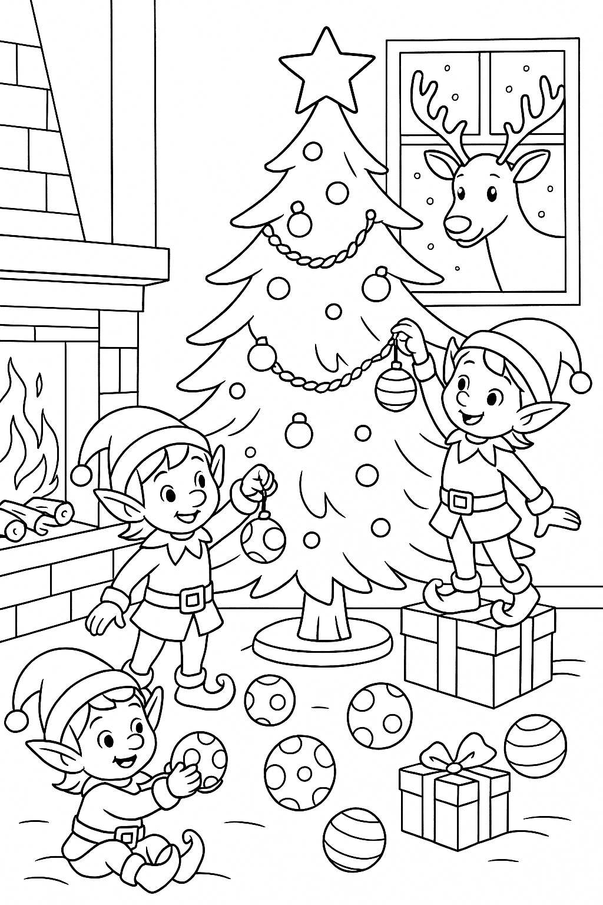
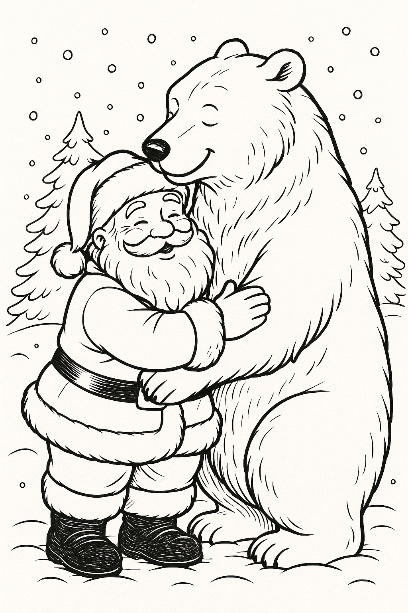
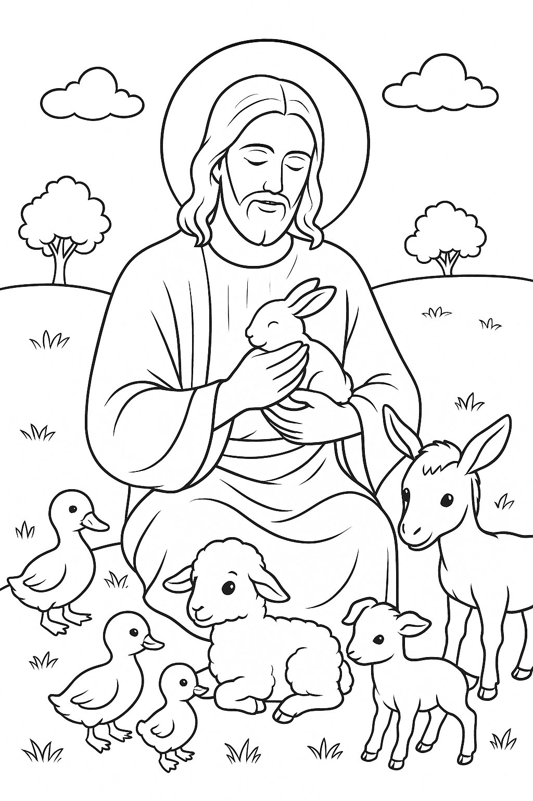
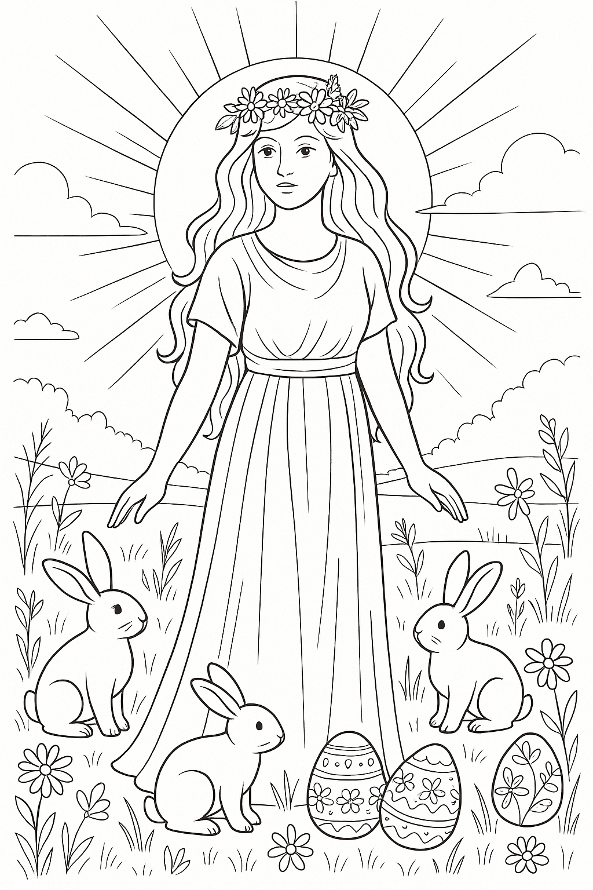
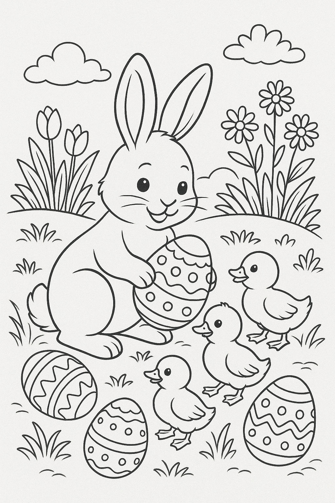
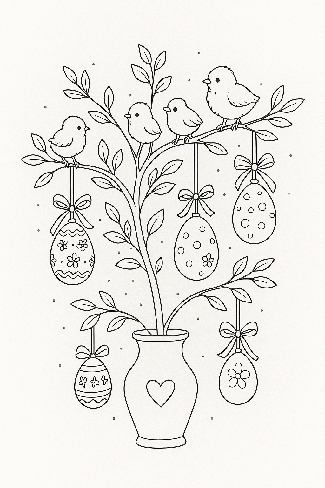
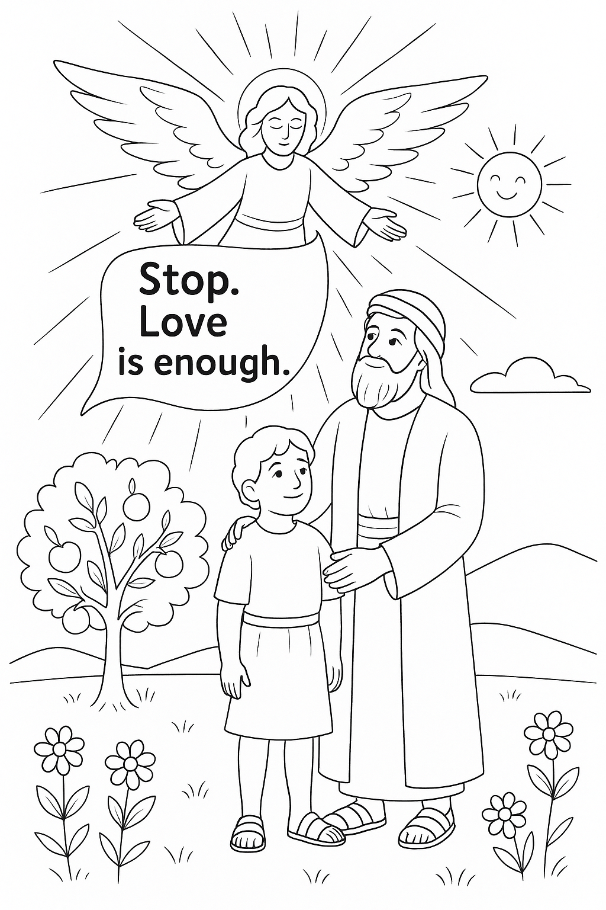
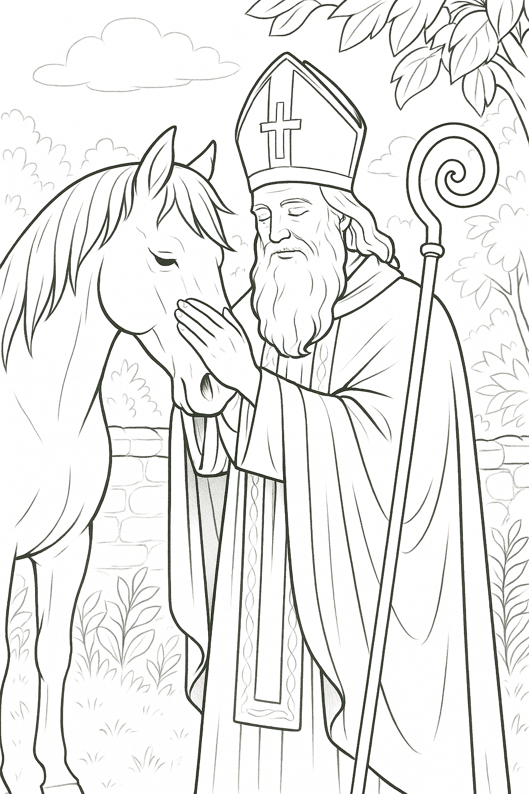

De geboorte van Jezus
In een stille nacht in Bethlehem werd een heel bijzonder kindje geboren: Jezus, een lichtje voor de wereld.
Kerstelfjes om de Kerstboom
Kerstelfjes versieren de boom met licht, slingers en een kerstster - terwijl ze giechelen en lachen in de magie van kerst.
Kerstman knuffelt een Ijsbeer
De kerstman geeft een grote knuffel aan een vriendelijke ijsbeer, midden in de sneew, vol warmte en kerstvrede.
Jezus knuffelt een konijntje
Een liefevolle kleurplaat van Jezus die een konijntje knuffel op een mooie lentedag. Zo verspreid Jezus zijn liefde.
De Godin Ostara
De Germaanse Godin Ostara. Haar naam is verwant aan Pasen. We vieren het nieuwe licht en het ontwaken van de natuur.
Paashuis en Kuikentjes
De paashaas die paaseitjes uitdeelt aan zijn schattige kuikenvriendjes. Zo wenst hij ze een vrolijk Pasen!
Vrolijke Paastak
Paastakken zijn versierde lentetakken vol eitjes en kleur, als symbool van leven en het ontwaken van de natuur.
Abraham ziet het Licht
Toen Abraham zijn zoon wilde offeren, verscheen Engel Gabriël en sprak: 'Stop - Liefde is genoeg' God vraagt nooit bloed, alleen je hart.
Sinterklaas en zijn trouwe Paard
Sinterklaas bedankt zijn trouwe Paard Amerigo (Ozosnel) met een knuffel vol liefde, na een lange nacht vol cadeautjes.